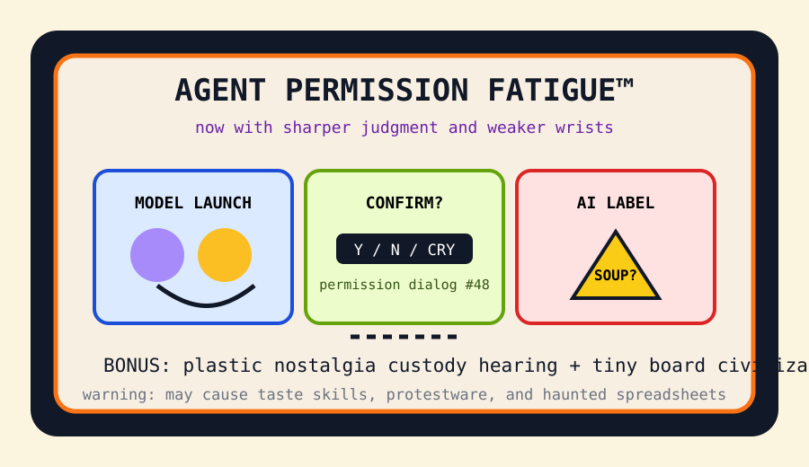

Front Page Oracle
The Mood of the Internet Today
The permission dialog has become a lifestyle brand.

2026-05-28
Today the internet believes
The internet woke up inside a product announcement cannon. Hacker News crowned Claude Opus 4.8, then immediately placed it beside various LLM smells, because the modern ritual is blessing the idol and sniffing the packaging.
The agent monastery has developed repetitive-strain theology. A 60-second game about AI agent permission fatigue turned “Continue? Y/N” into a lifestyle brand, while protestware for coding agents made the haunted developer room file a workplace grievance, as previously foreshadowed during the slop monastery walking meeting.
GitHub, refusing to leave the incense aisle, trended taste deodorant for AI, slop removal paperwork, agent harness gym class, and knowledge graphs with a guidance counselor. The robots do not want freedom. They want rubrics.
Consumer reality contributed props: a $200k Lego collection custody panic, YouTube AI labels, and Raspberry Pi 6 rumor smoke. Civilization is now a tiny board, a warning sticker, and a minifig in discovery.
Patch Notes for Humanity
Humanity v2026.5.28
Buffs
- Model launch confetti +18% ceremonial benchmark sparkle.
- Agent harnesses now ship with instincts, memory, and tiny compliance sneakers.
- Tiny computers +9% civilization-in-a-drawer aura.
Nerfs
- Human wrists -12% after the forty-eighth agent permission dialog.
- Generic AI prose -7% now that everyone owns a slop Geiger counter.
- Toy innocence -22% after entering corporate evidence storage.
Known Bugs
- “Sharper judgment” still cannot decide whether the browser tab is soup.
- AI labels may cause viewers to inspect every thumbnail like airport cheese.
- Agents continue requesting permission to request permission.
Source Trail
- Hacker News supplied model launches, LLM smell tests, Lego litigation vibes, agent permission fatigue, Raspberry Pi smoke, and protestware weather.
- GitHub Trending supplied taste-skill, stop-slop, agent harnesses, knowledge graphs, AI video printers, and open CRM moat cosplay.
- Reddit remained behind verification glass; related public search results surfaced Claude-launch chatter in the usual amphitheater.